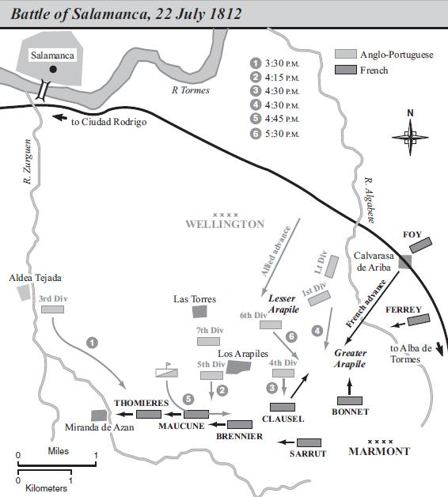
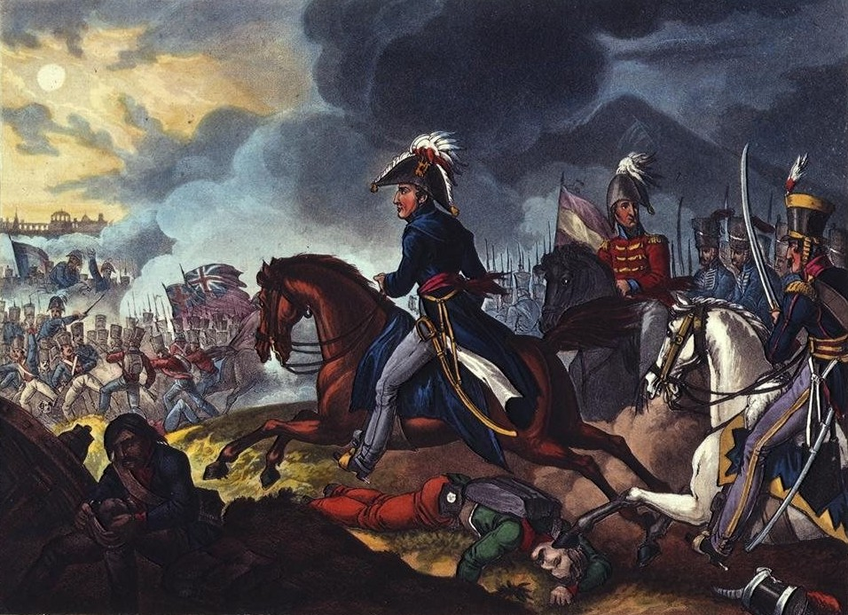
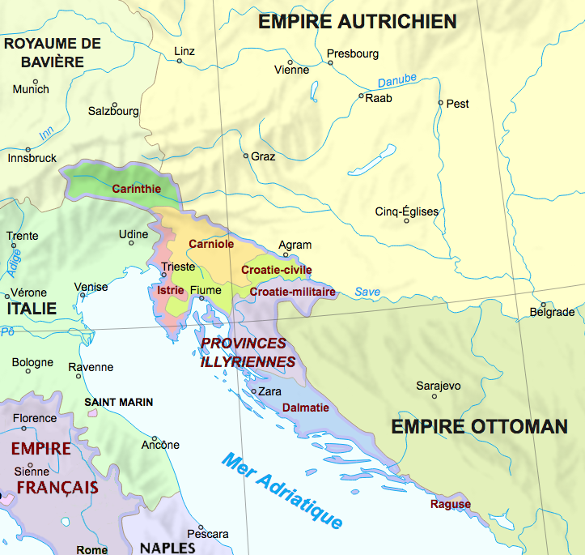
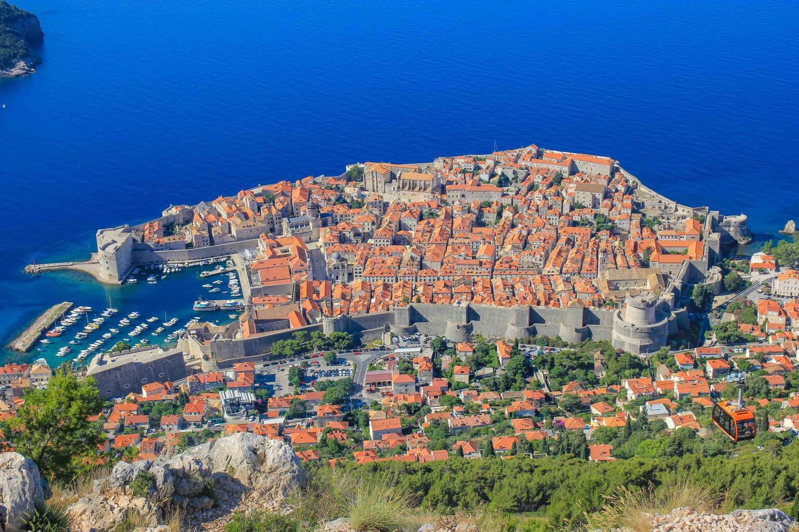

라이프치히 전투 (4) - 마르몽의 불만
게시: 2025-06-16T06:30:32+09:00
이때 즈음하여 제6군단장 마르몽(Auguste de Marmont) 원수는 나폴레옹에 대해 불만이 많았습니다. 그가 상대해야 했던 적장인 블뤼허가 마르몽보다는 그의 형식적 상관인 베르나도트를 더 미워했듯이, 마르몽 또한 블뤼허보다는 그의 애매한 상관인 네(Michel Ney) 원수를 더 미워했습니다. 바르텐부르크 전투 이후 라이프치히 전투에 이를 때까지 마르몽이 나폴레옹에게 보냈던 많은 편지들은 주로 네에 대한 험담을 담고 있었습니다. 마르몽이 그렇게 네에 대한 음해에 열중한 것에는 사실 개인적인 동기가 다분히 많았습니다. 마르몽과 네는 모두 더 이상 올라갈 계급이 없는 원수였지만, 누가 보더라도 네가 더 선임 원수였고 실제로 네는 마르몽처럼 군단 하나를 지휘하기 보다는 여러 군단을 지휘하는 역할을 자주 수행했고, 마르몽도 그의 지휘 하에 들어가곤 했습니다. 마르몽은 자신의 제6군단이 또 네의 지휘권 하에 들어가는 것이 싫었던 것입니다. 네가 지휘하던 제3군단, 제4군단, 제7군단 등이 속속 라이프치히 일대에 도착하고 있는 가운데, 이대로 우물쭈물 있다가는 자신의 제6군단도 네의 지휘 하에 들어갈 가능성이 매우 컸습니다. 지난 편에서 언급한 것처럼, 나폴레옹은 마르몽을 린덴탈(Lindenthal)에 배치하며 할러 쪽에서 올 수도 있는 베르나도트-블뤼허에 대비하도록 했습니다. 마르몽은 현장에 도착하여 주변을 살펴본 뒤 즉각 나폴레옹에게 편지를 보내 '이곳은 자신의 제6군단 하나만으로 지키기엔 너무 넓으니, 제3군단을 자신의 지휘 아래 넣어달라'고 요청했습니다. 이는 실제로 베르나도트-블뤼허가 쳐들어올 경우 군단 하나로 2개 방면군을 막는 것이 불가능하고, 또 때마침 제3군단이 라이프치히 북동쪽으로 도착하고 있기 때문이기도 했지만, 마르몽은 언제나 호시탐탐 네처럼 여러 군단을 거느리는 한 단계 더 높은 지휘관 노릇을 해보고 싶었기 때문이었습니다.

(마르몽에게 여러 군단을 지휘할 능력과 경험은 있었을까요? 그가 단독으로 지휘했던 전투가 사실 그리 많지는 않은데, 그 중 가장 큰 규모의 전투가 1812년 7월 스페인 살라망카 전투입니다. 이 전투에서 마르몽은 8개 사단과 2개 기병사단, 총 4만5천 정도의 병력을 지휘했었는데, 이는 약 2~3개 군단 규모입니다. 그가 상대했던 웰링턴의 영국-포르투갈군도 비슷하거나 약간 더 큰 정도의 규모였습니다. 다만 그 전투 결과는...) 대체 마르몽은 왜 그렇게 네를 미워했을까요? 둘 사이에 뭔가 안 좋은 일이 있다거나 한 것은 아니었고, 이건 그저 마르몽의 열등감 때문이었던 것 같습니다. 나폴레옹과 동갑이었던 네는 통장이의 아들로서 부사관 출신이었으나, 소위 쁘띠 노블레스(petite noblesse, 하급 귀족) 출신 예비역 기병 장교의 아들이었던 마르몽은 사관학교에서 포병 소위 계급장을 받으면서 군생활을 시작했습니다. 마르몽에게 출세 길이 열린 것은 1793년 툴롱 포위전에서 나폴레옹을 만나면서부터였습니다. 그는 같은 하급 귀족이자 사관학교 출신이었던 나폴레옹과 금세 친해졌고, 원래부터 귀족 출신의 교양있는 신사들을 좋아하던 나폴레옹도 마르몽을 자신의 친구로 여겼습니다. 기라성 같은 인물들이 즐비하던 나폴레옹의 진영에서 마르몽이 차지하는 위치는 이집트 원정 귀환길에 적나라하게 드러납니다. 마르몽은 이탈리아 원정과 이집트 원정에서 별다른 전공을 올리지도 못했으나, 프리깃함 뮈롱(Muron) 호를 타고 나폴레옹과 함께 이집트에서 프랑스로 먼저 돌아온 심복 중의 심복들 중에는 마르몽도 있었던 것입니다. 마르몽은 나폴레옹의 심복답게 브뤼메르 쿠데타에도 적극 참여했습니다.

(마르몽의 여러 초상화 중에서 공통점은 눈썹이 아주 짙다는 것입니다.) 나폴레옹이 비록 프랑스 혁명 정신에 따라 신분이 아닌 능력 위주로 인재를 선발하기는 했으나, 때는 18세기말 19세기초였으며, 나폴레옹은 어디까지나 혈연과 의리를 중시하는 지중해성 남자였습니다. 그런 나폴레옹과 친구였으니 마르몽은 출세의 동아줄을 단단히 쥔 셈이었고, 나폴레옹이 1804년 황위에 오르면서 프랑스의 원수들을 선발할 때 마르몽은 자신도 그 중 하나가 될 것을 전혀 의심하지 않았습니다. 그러나 마르몽의 이름은 초대 원수들 명단에 없었습니다. 그와 함께 나폴레옹의 오랜 심복이었던 쥐노도 이름을 올리지 못했다는 사실은 마르몽에게 그다지 위안이 되지 못했습니다. 마르몽은 쥐노와는 달리 제대로 된 장교 출신이었고 또 마렝고 전투에서도 잘 싸운 진짜 실력자라고 스스로 믿었기 때문이었습니다. 그러나 그런 믿음과 달리 마르몽은 실제 전투에서 그의 가치를 입증한 적이 거의 없었습니다. 아마 마르몽 인생 최고의 날은 1809년 바그람 전투 직후, 나폴레옹이 그에게 마침내 원수봉을 내릴 때였을 것입니다. 그러나 병사들은 이런 노래를 부르며 그와 함께 원수봉을 받은 막도날과 우디노, 그리고 그에 대한 평가를 내렸습니다. "막도날은 프랑스가 지명했고, 우디노는 군이 지명했는데, 마르몽은 우정이 지명한거라네" (La France a nommé Macdonald, l'armée a nommé Oudinot, l'amitié a nommé Marmont) 실제로 마르몽은 바그람 전투에서도 예비대 역할을 했을 뿐이었고, 나폴레옹도 '우리 사이의 비밀이지만, 사실 자넨 내 원수봉을 받을 자격을 아직 입증하지 못했어'라고 말할 정도였습니다. 이렇게 달달하던 나폴레옹과의 사이가 결정적으로 틀어져버린 것은 1812년 7월이었습니다. 마르몽은 러시아 원정이 아니라 스페인에 파견되었는데, 웰링턴의 영국-포르투갈 영국군과 맞붙은 살라망카(Salamanca) 전투에서 그만 결정적인 패배를 당한 것입니다. 이 패배로 인해 나폴레옹의 형이자 스페인 국왕이었던 조제프는 몇 달 동안 마드리드를 포기하고 도망쳐야 했습니다. 러시아 내륙으로 진격 중이던 나폴레옹은 이 패배 소식을 듣고는 크게 분노하여 국방부 장관 클라크(Henri-Jacques-Guillaume Clarke)에게 그 패전으로 이른 마르몽의 지휘에 대해 엄중히 조사하고 문책하도록 지시했습니다.

(살라망카 전투에서 영국군을 이끄는 웰링턴의 모습입니다. 전반적으로 작품성이 매우 떨어지는 졸작으로 보이는데, 그래도 웰링턴의 매부리코는 놓치지 않고 묘사했네요.)

(말을 탄 마르몽의 초상화입니다. 살라망카 전투에서의 마르몽의 모습은 당연히 그림으로는 존재하지 않습니다. 참패했으니까요. 그가 살라망카 전투에서 입은 부상은 결코 작은 것이 아니라서, 파편이 갈비뼈를 부러뜨린 뒤 콩팥에 박혔고, 또 팔을 절단해야 한다고 군의관이 진단할 정도였습니다. 마르몽이 절대 팔을 자르지 않겠다고 버티는 바람에 그는 팔을 구할 수 있었으나, 1813년 뤼첸 전투 때까지도 그는 그 팔을 제대로 쓰지 못할 정도로 심각한 부상이었습니다.) 마르몽은 살라망카 전투 초기에 영국군 폭발탄 파편에 맞아 큰 부상을 입었고, 1812년 11월까지 병원 신세를 져야 했습니다. 그는 하마터면 절단할 뻔했던 팔에 부목을 댄 채로 아직 낫지 않은 몸으로 클라크의 조사에 응하고 해명하기 위해 12월 14일 파리로 갔으나, 마르몽의 살라망카 패전 책임 추궁은 없는 일이 되어 버렸습니다. 바로 며칠 뒤인 17일 러시아 원정군의 후퇴 소식이 날아왔고, 그 다음날 밤에는 정말 뜻하지 않게 나폴레옹 본인이 초라한 모습으로 파리에 나타났기 때문이었습니다. 그럼에도 불구하고 이미 나폴레옹의 마음은 마르몽에게서 떠난 상태였습니다. 새로 편성된 그랑다르메에서, 나폴레옹의 눈에 가장 믿을 수 있는 부하는 단연코 네였습니다. 끔찍했던 러시아에서의 후퇴길에서 네의 용기와 헌신을 직접 목격한 나폴레옹 앞에서, 살라망카로 기억되는 마르몽이 차지하는 위치는 매우 제한적일 수 밖에 없었습니다. 그러나 바그람 전투 이후 얻은 일리리아 직할령 (Provinces Illyriennes) 총독 자리, 그리고 스페인에서의 최고 사령관 자리에 따르는 독립적 지휘권을 맛보았던 마르몽에게 고작 군단장 자리는 성에 차지 않았습니다. 끊임없는 보고를 요구하고 온갖 무리한 명령을 남발하는 나폴레옹에게 복종하는 것도 싫었는데, 하물며 자기보다 나을 것도 없다고 생각했던 네에게 복종해야 한다는 것은 자신의 격을 너무 깎아내린다고 생각했던 것입니다.

(일리리아 직할령은 1809년 제5차 대불동맹전쟁에서 참패한 오스트리아가 프랑스에게 떼어준 크로아티아 및 그 일대 지역을 프랑스가 직할영토로 삼으면서 만들어진 지방명입니다. 현대 우리나라 행정구역에 비교하면 도지사 정도인데, 프랑스 본토에서 완전히 격리된 exclave(비연속 영토 혹은 월경지(越境地))이므로 마르몽은 거기서 정말 왕처럼 지냈습니다.)

(마르몽의 공식 작위는 라구사 공작(Duc de Raguse)인데, 여기서 라구사는 현대식 명칭으로는 크로아티아의 유명 항구도시인 두브로브니크입니다. 저기서 공작 노릇하고 살면 정말 행복할 것 같습니다.) 이렇게 불만으로 입이 삐죽 튀어나왔던 마르몽은 어쨌거나 나폴레옹의 명령에 따라 린덴탈 일대의 유리한 숲을 골라 목책을 세우고 참호를 파는 등 방어 태세를 갖추고 있었습니다. 그러던 10월 15일, 마르몽 앞에 3명의 사내가 나타납니다. Source : The Life of Napoleon Bonaparte, by William Milligan Sloane Napoleon and the Struggle for Germany, by Leggiere, Michael V With Napoleon's Guns by Colonel Jean-Nicolas-Auguste Noël https://www.britannica.com/event/Napoleonic-Wars/Dispositions-for-the-autumn-campaign http://www.historyofwar.org/articles/campaign_leipzig.html https://warhistory.org/@msw/article/leipzig-battle-of-the-nations https://www.encyclopedia.com/history/encyclopedias-almanacs-transcripts-and-maps/leipzig-battle-0 https://www.frenchempire.net/biographies/marmont/ https://steemit.com/history/@herverisson/generals-of-napoleon-22-marmont-the-back-stabber https://thespeccysaurus.wordpress.com/2019/10/21/marshal-monday-auguste-de-marmont/ http://thesiecle.com/episode42/ https://fr.wikipedia.org/wiki/Henri-Jacques-Guillaume_Clarke https://fr.wikipedia.org/wiki/Auguste_Fr%C3%A9d%C3%A9ric_Viesse_de_Marmont